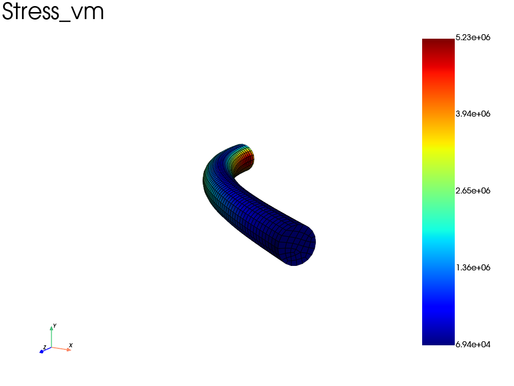
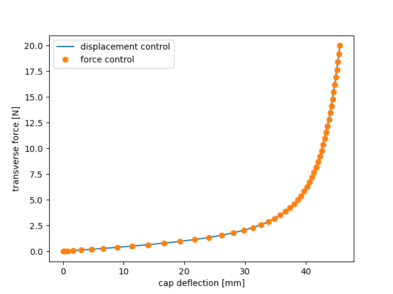

Note
Go to the end to download the full example code.
Finite-strain Neo-Hookean cantilever (rigid cap, force and displacement control)
A slender, nearly-incompressible cylinder is clamped at its base and bent by a transverse load applied to a rigid cap tied to its top face. It is loaded well into the large-deflection, finite-strain regime (tip deflection of order the cylinder length, cap rotated by ~90 degrees).
This exercises the updated-lagrangian hyperelastic path of
fedoo.weakform.StressEquilibrium with a simcoon NEOHC (compressible
Neo-Hookean) law. The strain energy is
with \(\mu = E/(2(1+\nu))\) the shear modulus and \(\kappa = E/(3(1-2\nu))\) the bulk modulus.
The rigid cap is a fedoo.constraint.RigidTie: it ties the whole top face
to six global rigid-body DOFs (RigidDispX/Y/Z, RigidRotX/Y/Z). The same
static problem is solved with the two loading protocols:
force control: a transverse force is applied on
RigidDispX(Neumann condition on the cap DOF);displacement control:
RigidDispXis prescribed up to the deflection reached under force control, and the reaction force is recovered withget_ext_forces().
Both protocols must follow the same force-deflection curve, which is the cross-check plotted at the end.
Force control is the demanding one: the transverse stiffness of the cap is tiny (~40 N/m at the origin) and the response stiffens strongly as the cylinder aligns with the load, so each Newton step is a large move along a soft bending mode. The equilibrium path is nevertheless monotonic (no limit point), so a plain static analysis follows it without any inertial or viscous regularization, provided that:
the force increments are small while the structure is soft. From the undeformed state, the linear prediction of a 2 N increment is already a transverse translation of 0.9 L, far outside the convergence basin of Newton’s method. The force is therefore ramped quadratically in time (gentle start, larger increments once the cylinder has stiffened); the automatic time stepping (
update_dt=True) remains as a safety net and would cut an increment that fails;the
"Force"convergence criterion (residual relative to the applied load), which measures equilibrium directly. On a soft mode the norm of the displacement correction says little about the remaining out-of-balance force, so a loose absolute displacement tolerance can accept unbalanced states;the safeguard line search (
mode="safeguard"), which only rejects trial states with inverted elements and never throttles legitimate large soft-mode steps. A pure residual-descent line search (mode="minimize") would strangle them.
The mesh is read from an Abaqus .inp deck. Two are provided and give the same
cap displacement (the peak stress at the clamped base depends on the mesh): a
linear hex8 mesh solved with reduced integration
(fedoo.weakform.StressEquilibriumRI, which avoids volumetric locking at
\(\nu = 0.49\)), and a quadratic hex20 mesh solved with full integration
(fedoo.weakform.StressEquilibrium).
import matplotlib.pyplot as plt
import numpy as np
import fedoo as fd
Parameters
L, R = 0.05, 0.0025 # cylinder length / radius [m]
E, nu = 60e6, 0.49 # Young's modulus [Pa], Poisson's ratio
mu = E / (2 * (1 + nu))
kappa = E / (3 * (1 - 2 * nu))
F_CAP = 20.0 # transverse force on the cap [N]
# "linear" -> hex8, reduced integration (StressEquilibriumRI); faster
# "quadratic" -> hex20, full integration (StressEquilibrium)
MESH = "linear"
# path relative to this example's directory (as run by sphinx-gallery)
MESH_FILE = (
"../../util/meshes/cyl08_hexa_lin.inp"
if MESH == "linear"
else "../../util/meshes/cyl08_hexa_quad.inp"
)
fd.ModelingSpace("3D")
# Read the C3D8/C3D20 cylinder mesh from its Abaqus .inp file.
mesh = fd.Mesh.read(MESH_FILE)
z = mesh.nodes[:, 2]
bottom = mesh.find_nodes("Z", z.min()) # clamped base
top = mesh.find_nodes("Z", z.max()) # tied to the rigid cap
Material and weak form
material = fd.constitutivelaw.Simcoon("NEOHC", [mu, kappa], name="neohookean")
if mesh.elm_type == "hex8":
# reduced integration + hourglass control avoids volumetric locking
wf = fd.weakform.StressEquilibriumRI(material, nlgeom="UL")
else: # hex20: full integration
wf = fd.weakform.StressEquilibrium(material, nlgeom="UL")
# the initial-stress stiffness is part of the tangent under large rotations;
# it is assembled by default in finite strain (geometric_stiffness=None)
Static solve, either protocol
def solve(control, value, output=None):
"""Load the cap by a force [N] or a displacement [m] along X.
Returns the problem, its output and the (deflection, force) history of
the cap, one row per converged increment.
"""
assembly = fd.Assembly.create(wf, mesh)
pb = fd.problem.NonLinear(assembly)
pb.set_nr_criterion("Force", tol=1e-4, max_subiter=20)
pb.add_line_search(mode="safeguard") # validity filter, never throttles
results = None
if output is not None:
results = pb.add_output(output, assembly, ["Disp", "Stress", "Strain"])
pb.bc.add(fd.constraint.RigidTie(top)) # rigid cap on the top face
pb.bc.add("Dirichlet", bottom, "Disp", 0) # clamp the base
if control == "force":
# quadratic ramp: small force increments while the structure is soft
pb.bc.add("Neumann", "RigidDispX", value, time_func=lambda t: t**2)
else:
pb.bc.add("Dirichlet", "RigidDispX", value)
history = [(0.0, 0.0)]
def record(problem):
ux = float(np.ravel(problem.get_dof_solution("RigidDispX"))[0])
fx = float(np.ravel(problem.get_ext_forces("RigidDispX"))[0])
history.append((ux, fx))
pb.nlsolve(
dt=0.02,
tmax=1.0,
update_dt=True,
dt_max=0.02,
print_info=1,
interval_output=0.02,
callback=record,
)
return pb, results, np.array(history)
pb, results, curve_force = solve("force", F_CAP, output="results/neohookean_cantilever")
ux_final = curve_force[-1, 0]
rot_y = float(np.ravel(pb.get_dof_solution("RigidRotY"))[0])
# displacement control up to the same deflection: the reaction must match
_, _, curve_disp = solve("displacement", ux_final)
Iter 1 - Time: 0.02000 - dt 0.02000 - NR iter: 3 - Err: 0.00000
Iter 2 - Time: 0.04000 - dt 0.02000 - NR iter: 3 - Err: 0.00000
Iter 3 - Time: 0.06000 - dt 0.02000 - NR iter: 3 - Err: 0.00001
Iter 4 - Time: 0.08000 - dt 0.02000 - NR iter: 3 - Err: 0.00000
Iter 5 - Time: 0.10000 - dt 0.02000 - NR iter: 4 - Err: 0.00000
Iter 6 - Time: 0.12000 - dt 0.02000 - NR iter: 4 - Err: 0.00001
Iter 7 - Time: 0.14000 - dt 0.02000 - NR iter: 4 - Err: 0.00002
Iter 8 - Time: 0.16000 - dt 0.02000 - NR iter: 4 - Err: 0.00006
Iter 9 - Time: 0.18000 - dt 0.02000 - NR iter: 4 - Err: 0.00008
Iter 10 - Time: 0.20000 - dt 0.02000 - NR iter: 5 - Err: 0.00000
Iter 11 - Time: 0.22000 - dt 0.02000 - NR iter: 5 - Err: 0.00001
Iter 12 - Time: 0.24000 - dt 0.02000 - NR iter: 5 - Err: 0.00001
Iter 13 - Time: 0.26000 - dt 0.02000 - NR iter: 5 - Err: 0.00001
Iter 14 - Time: 0.28000 - dt 0.02000 - NR iter: 5 - Err: 0.00001
Iter 15 - Time: 0.30000 - dt 0.02000 - NR iter: 5 - Err: 0.00000
Iter 16 - Time: 0.32000 - dt 0.02000 - NR iter: 4 - Err: 0.00007
Iter 17 - Time: 0.34000 - dt 0.02000 - NR iter: 4 - Err: 0.00002
Iter 18 - Time: 0.36000 - dt 0.02000 - NR iter: 4 - Err: 0.00001
Iter 19 - Time: 0.38000 - dt 0.02000 - NR iter: 4 - Err: 0.00000
Iter 20 - Time: 0.40000 - dt 0.02000 - NR iter: 4 - Err: 0.00000
Iter 21 - Time: 0.42000 - dt 0.02000 - NR iter: 4 - Err: 0.00000
Iter 22 - Time: 0.44000 - dt 0.02000 - NR iter: 4 - Err: 0.00000
Iter 23 - Time: 0.46000 - dt 0.02000 - NR iter: 4 - Err: 0.00000
Iter 24 - Time: 0.48000 - dt 0.02000 - NR iter: 4 - Err: 0.00000
Iter 25 - Time: 0.50000 - dt 0.02000 - NR iter: 4 - Err: 0.00000
Iter 26 - Time: 0.52000 - dt 0.02000 - NR iter: 4 - Err: 0.00000
Iter 27 - Time: 0.54000 - dt 0.02000 - NR iter: 4 - Err: 0.00000
Iter 28 - Time: 0.56000 - dt 0.02000 - NR iter: 4 - Err: 0.00000
Iter 29 - Time: 0.58000 - dt 0.02000 - NR iter: 4 - Err: 0.00000
Iter 30 - Time: 0.60000 - dt 0.02000 - NR iter: 4 - Err: 0.00000
Iter 31 - Time: 0.62000 - dt 0.02000 - NR iter: 4 - Err: 0.00000
Iter 32 - Time: 0.64000 - dt 0.02000 - NR iter: 4 - Err: 0.00000
Iter 33 - Time: 0.66000 - dt 0.02000 - NR iter: 4 - Err: 0.00000
Iter 34 - Time: 0.68000 - dt 0.02000 - NR iter: 3 - Err: 0.00007
Iter 35 - Time: 0.70000 - dt 0.02000 - NR iter: 3 - Err: 0.00005
Iter 36 - Time: 0.72000 - dt 0.02000 - NR iter: 3 - Err: 0.00003
Iter 37 - Time: 0.74000 - dt 0.02000 - NR iter: 3 - Err: 0.00002
Iter 38 - Time: 0.76000 - dt 0.02000 - NR iter: 3 - Err: 0.00002
Iter 39 - Time: 0.78000 - dt 0.02000 - NR iter: 2 - Err: 0.00009
Iter 40 - Time: 0.80000 - dt 0.02000 - NR iter: 4 - Err: 0.00000
Iter 41 - Time: 0.82000 - dt 0.02000 - NR iter: 2 - Err: 0.00008
Iter 42 - Time: 0.84000 - dt 0.02000 - NR iter: 3 - Err: 0.00009
Iter 43 - Time: 0.86000 - dt 0.02000 - NR iter: 2 - Err: 0.00004
Iter 44 - Time: 0.88000 - dt 0.02000 - NR iter: 3 - Err: 0.00005
Iter 45 - Time: 0.90000 - dt 0.02000 - NR iter: 2 - Err: 0.00004
Iter 46 - Time: 0.92000 - dt 0.02000 - NR iter: 3 - Err: 0.00003
Iter 47 - Time: 0.94000 - dt 0.02000 - NR iter: 2 - Err: 0.00003
Iter 48 - Time: 0.96000 - dt 0.02000 - NR iter: 3 - Err: 0.00001
Iter 49 - Time: 0.98000 - dt 0.02000 - NR iter: 2 - Err: 0.00003
Iter 50 - Time: 1.00000 - dt 0.02000 - NR iter: 3 - Err: 0.00001
Iter 1 - Time: 0.02000 - dt 0.02000 - NR iter: 3 - Err: 0.00000
Iter 2 - Time: 0.04000 - dt 0.02000 - NR iter: 3 - Err: 0.00000
Iter 3 - Time: 0.06000 - dt 0.02000 - NR iter: 3 - Err: 0.00000
Iter 4 - Time: 0.08000 - dt 0.02000 - NR iter: 3 - Err: 0.00000
Iter 5 - Time: 0.10000 - dt 0.02000 - NR iter: 3 - Err: 0.00000
Iter 6 - Time: 0.12000 - dt 0.02000 - NR iter: 3 - Err: 0.00001
Iter 7 - Time: 0.14000 - dt 0.02000 - NR iter: 3 - Err: 0.00001
Iter 8 - Time: 0.16000 - dt 0.02000 - NR iter: 3 - Err: 0.00001
Iter 9 - Time: 0.18000 - dt 0.02000 - NR iter: 3 - Err: 0.00001
Iter 10 - Time: 0.20000 - dt 0.02000 - NR iter: 3 - Err: 0.00001
Iter 11 - Time: 0.22000 - dt 0.02000 - NR iter: 3 - Err: 0.00001
Iter 12 - Time: 0.24000 - dt 0.02000 - NR iter: 3 - Err: 0.00001
Iter 13 - Time: 0.26000 - dt 0.02000 - NR iter: 3 - Err: 0.00001
Iter 14 - Time: 0.28000 - dt 0.02000 - NR iter: 3 - Err: 0.00001
Iter 15 - Time: 0.30000 - dt 0.02000 - NR iter: 3 - Err: 0.00001
Iter 16 - Time: 0.32000 - dt 0.02000 - NR iter: 3 - Err: 0.00002
Iter 17 - Time: 0.34000 - dt 0.02000 - NR iter: 3 - Err: 0.00002
Iter 18 - Time: 0.36000 - dt 0.02000 - NR iter: 3 - Err: 0.00002
Iter 19 - Time: 0.38000 - dt 0.02000 - NR iter: 3 - Err: 0.00002
Iter 20 - Time: 0.40000 - dt 0.02000 - NR iter: 3 - Err: 0.00003
Iter 21 - Time: 0.42000 - dt 0.02000 - NR iter: 3 - Err: 0.00003
Iter 22 - Time: 0.44000 - dt 0.02000 - NR iter: 3 - Err: 0.00003
Iter 23 - Time: 0.46000 - dt 0.02000 - NR iter: 3 - Err: 0.00004
Iter 24 - Time: 0.48000 - dt 0.02000 - NR iter: 3 - Err: 0.00004
Iter 25 - Time: 0.50000 - dt 0.02000 - NR iter: 3 - Err: 0.00005
Iter 26 - Time: 0.52000 - dt 0.02000 - NR iter: 3 - Err: 0.00005
Iter 27 - Time: 0.54000 - dt 0.02000 - NR iter: 3 - Err: 0.00006
Iter 28 - Time: 0.56000 - dt 0.02000 - NR iter: 3 - Err: 0.00007
Iter 29 - Time: 0.58000 - dt 0.02000 - NR iter: 3 - Err: 0.00007
Iter 30 - Time: 0.60000 - dt 0.02000 - NR iter: 3 - Err: 0.00008
Iter 31 - Time: 0.62000 - dt 0.02000 - NR iter: 3 - Err: 0.00010
Iter 32 - Time: 0.64000 - dt 0.02000 - NR iter: 4 - Err: 0.00000
Iter 33 - Time: 0.66000 - dt 0.02000 - NR iter: 3 - Err: 0.00010
Iter 34 - Time: 0.68000 - dt 0.02000 - NR iter: 4 - Err: 0.00000
Iter 35 - Time: 0.70000 - dt 0.02000 - NR iter: 4 - Err: 0.00000
Iter 36 - Time: 0.72000 - dt 0.02000 - NR iter: 4 - Err: 0.00000
Iter 37 - Time: 0.74000 - dt 0.02000 - NR iter: 4 - Err: 0.00000
Iter 38 - Time: 0.76000 - dt 0.02000 - NR iter: 4 - Err: 0.00000
Iter 39 - Time: 0.78000 - dt 0.02000 - NR iter: 4 - Err: 0.00000
Iter 40 - Time: 0.80000 - dt 0.02000 - NR iter: 4 - Err: 0.00000
Iter 41 - Time: 0.82000 - dt 0.02000 - NR iter: 4 - Err: 0.00000
Iter 42 - Time: 0.84000 - dt 0.02000 - NR iter: 4 - Err: 0.00000
Iter 43 - Time: 0.86000 - dt 0.02000 - NR iter: 4 - Err: 0.00000
Iter 44 - Time: 0.88000 - dt 0.02000 - NR iter: 4 - Err: 0.00000
Iter 45 - Time: 0.90000 - dt 0.02000 - NR iter: 4 - Err: 0.00000
Iter 46 - Time: 0.92000 - dt 0.02000 - NR iter: 4 - Err: 0.00000
Iter 47 - Time: 0.94000 - dt 0.02000 - NR iter: 4 - Err: 0.00000
Iter 48 - Time: 0.96000 - dt 0.02000 - NR iter: 4 - Err: 0.00000
Iter 49 - Time: 0.98000 - dt 0.02000 - NR iter: 4 - Err: 0.00000
Iter 50 - Time: 1.00000 - dt 0.02000 - NR iter: 4 - Err: 0.00000
Post-processing
print(
f"\nforce control : F = {F_CAP:.2f} N -> ux = {ux_final * 1000:.2f} mm "
f"({ux_final / L:.3f} L), rotY = {np.degrees(rot_y):.1f} deg"
)
print(
f"displacement control: ux = {curve_disp[-1, 0] * 1000:.2f} mm "
f"-> F = {curve_disp[-1, 1]:.2f} N"
)
results.load(results.n_iter - 1) # last (fully-loaded) increment
print(f"max von Mises stress: {results.get_data('Stress', 'vm', 'Node').max():.4e} Pa")
fig, ax = plt.subplots()
ax.plot(curve_disp[:, 0] * 1000, curve_disp[:, 1], "-", label="displacement control")
ax.plot(curve_force[:, 0] * 1000, curve_force[:, 1], "o", label="force control")
ax.set_xlabel("cap deflection [mm]")
ax.set_ylabel("transverse force [N]")
ax.legend()
plt.show()
results.plot("Stress", component="vm", data_type="Node", show=True)


force control : F = 20.00 N -> ux = 45.59 mm (0.912 L), rotY = 89.1 deg
displacement control: ux = 45.59 mm -> F = 20.00 N
max von Mises stress: 1.7813e+07 Pa
Total running time of the script: (1 minutes 31.972 seconds)